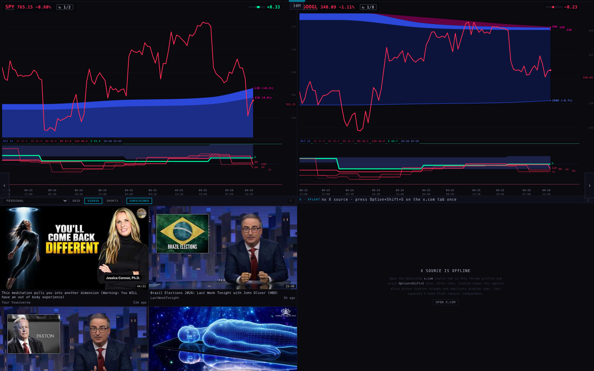
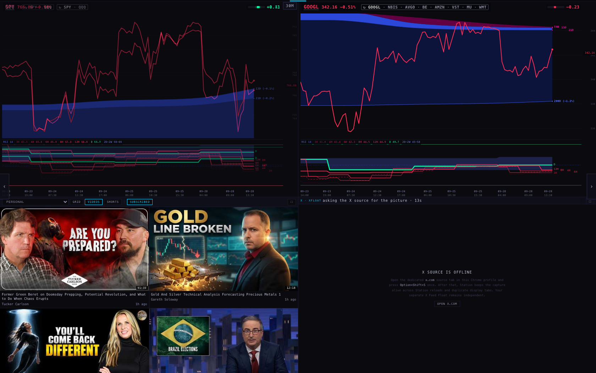
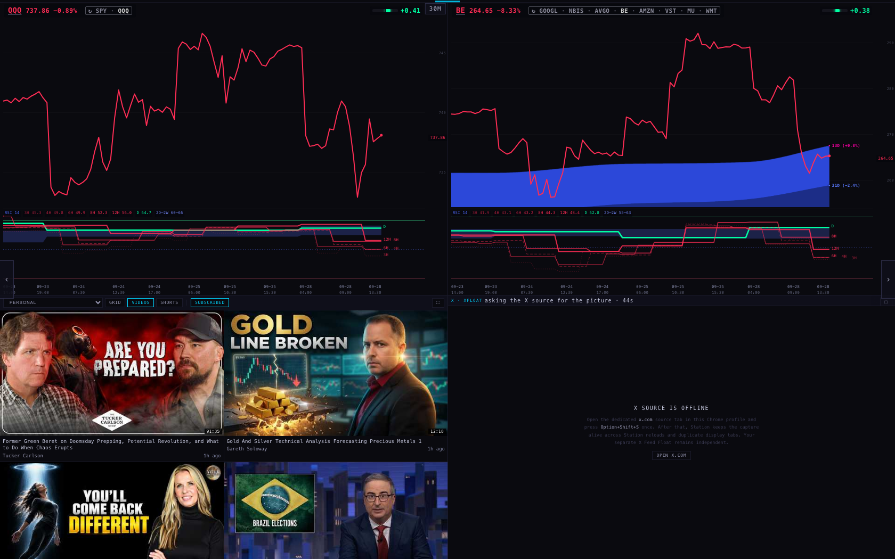
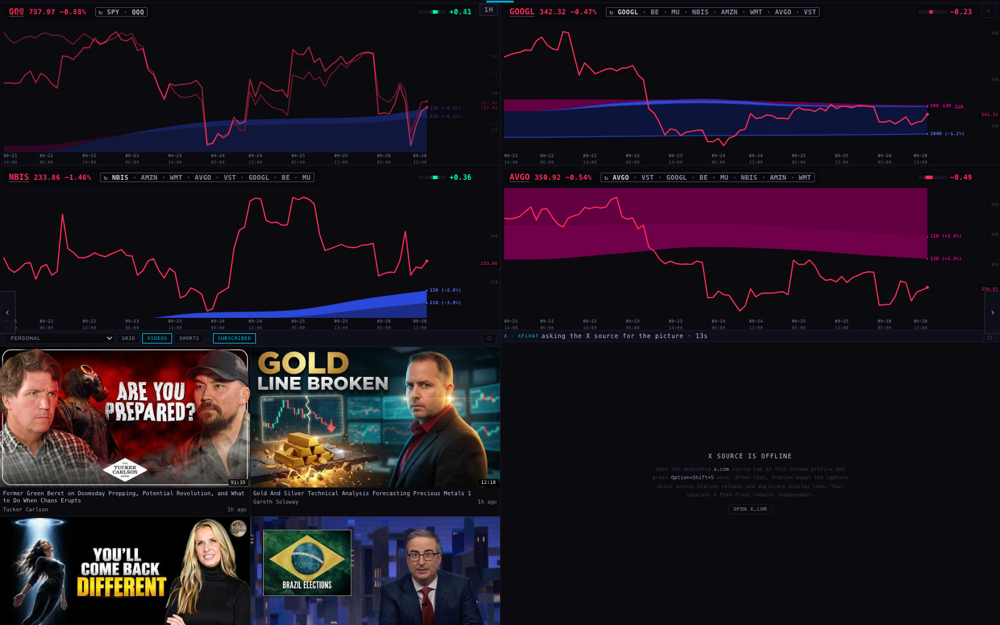
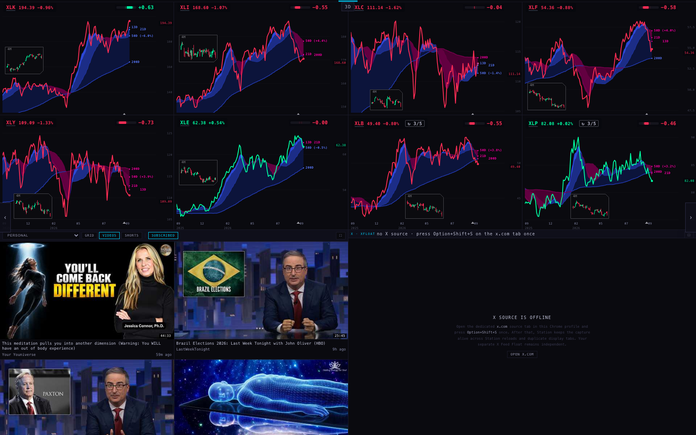
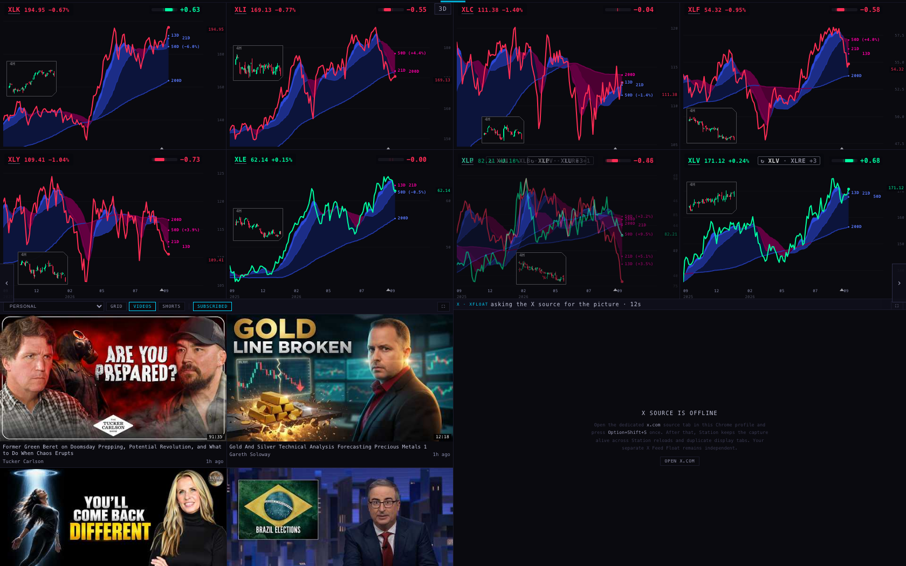
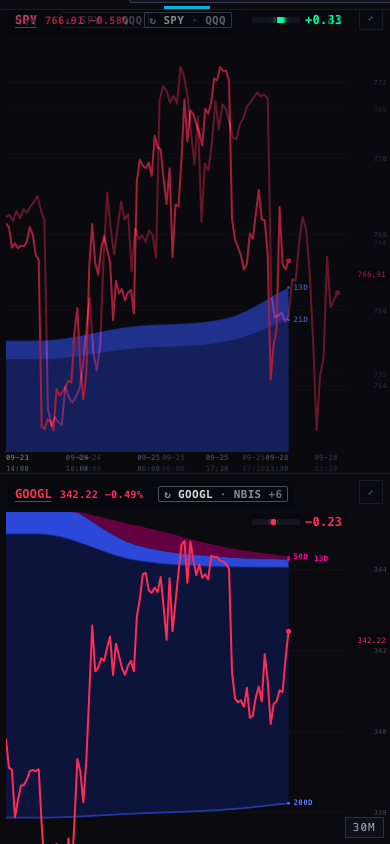
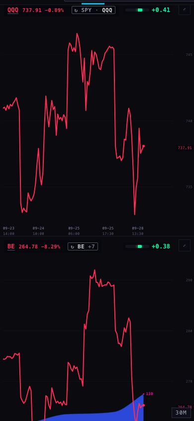
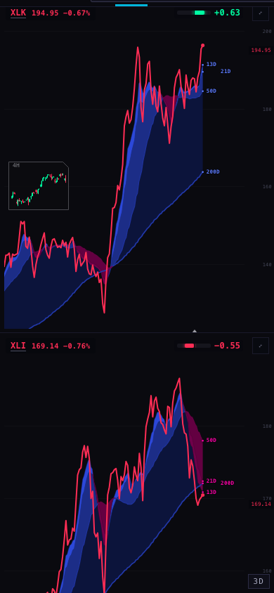

Branch station/followups-20260928, built on today's live Station (c9111f1). Pushed, not deployed. The six follow-ups from this morning's review are all built and checked in a real (hidden) browser.
What was happening. When a rotating slot changed to its next name, the new chart downloaded about 14 things from the chart service: the price bars, one set for each line of the RSI fan, and the daily bars for the clouds. It did this every time, even for a name it had shown 11 seconds earlier.
What changed. The Station now keeps one shared copy of everything a chart has downloaded, in the page that holds all the charts. The next chart for the same name reads that copy. A copy is kept until a new bar could exist. The chart service only sends finished bars, so a 30-minute chart's data can't change until the next half hour. Right after each :00 and :30 it's re-checked every 45 seconds for 3 minutes, in case the newest bar is a little late. Longer bars are kept no longer than the chart itself would keep them: 10 minutes for 2H–12H, 30 minutes for daily and longer. Failed downloads and "not available" answers are never kept. The check that a symbol is one of ours (the universe list) is shared the same way, so each new chart no longer repeats it.
| Calls to the chart service, per minute (5-minute run) | min 1 | min 2 | min 3 | min 4 | min 5 |
|---|---|---|---|---|---|
| INTRADAY · 30M, before | 189 | 148 | 144 | 141 | 172 |
| INTRADAY · 30M, after | 110 | 51 | 11 | 14 | 12 |
| … of which chart history, after | 92 | 38 | 0 | 0 | 0 |
| INTRADAY · 1H, before | 53 | 19 | 21 | 18 | 24 |
| INTRADAY · 1H, after | 45 | 20 | 19 | 22 | 18 |
The first two minutes on 30M are the first time each of the 10 names is seen (the target slot needs about 90 seconds to go through all 8 targets). After that, the 30M page downloads no chart history at all until a new bar closes. INTRADAY · 1H didn't change, because it wasn't re-downloading in the first place: it has no RSI fan, and its chart history was already read only once. Its ~20 calls a minute are the wall's live price and Geiger checks, which this work didn't touch.
Where the time went. I measured this rather than guessed, in a hidden browser, with each version run in turn so they got the same conditions. On a rotating page, the Station's own scripts were only about 1 second of every 80. The rest was two things:
What changed.
| CPU seconds | before | after |
|---|---|---|
| SECTORS (8 charts, 2 rotating), 2 minutes, two runs each | 8.47 · 7.76 | 5.76 · 5.44 |
| INTRADAY · 1H (4 rotating), 80 s, two runs each | 7.49 · 7.25 | 4.02 · 3.86 |
| For comparison: INTRADAY · 1H with in-slot rotation switched off | 1.36 · 1.34 | |
| Memory at the end of the SECTORS runs (MB) | 453 · 457 | 413 · 473 |
With the CPU slowed 4× to stand in for the old iMac (the iMac itself was not used): both versions finished all 24 name changes in 2 minutes, with no long freezes. But the CPU-seconds number can't be used here: Chrome's slow-down itself keeps the page busy, so both read about 100 seconds. I can't honestly claim a number for the iMac from this. The real-speed measurements above are the reliable ones.
Memory didn't clearly go down. Each rotating slot now keeps two charts alive (the one on screen and the one waiting for the next step) instead of creating and dropping one every 11 seconds. The end-of-run totals are in the same 410–480 MB range as before.
What was happening. The Station reads the Geiger once for all the charts on screen. A name that was about to fade in wasn't on screen yet, so its reading wasn't in that read. Its chip appeared 1–2 seconds after the fade, when the next read came back.
What changed. The read now includes every name the rotating slots cycle through, so the reading is already there. The reading is sent to the incoming chart just before its fade starts. If a read is still under way, the fade waits for it, but never more than 2 seconds.
Checked: in every run after the change, I recorded whether the chip was on the incoming chart at the moment its fade began: 73 of 73. In the runs before the change: 37 of 49.
What was happening. With the pointer over a chart, that chart kept its name, but its neighbours kept stepping through the same list. One of them could land on the held name, and then two panes showed the same ticker.
What changed. Each step is now planned for the whole page at once. A held chart keeps its name and claims it. A neighbour whose next name is claimed moves on to the next free name in its own list, and its ↻ tag shows the name it really shows. There's also a last safety check: a chart never fades in on a name another pane is still showing.
Checked: INTRADAY · 1H with the pointer held on chart 2 (GOOGL) for 70 seconds. The other three changed six times (for example SPY/AMZN/VST → SPY/WMT/BE → QQQ/AVGO/BE). In 141 checks, no name was ever on screen twice. The tests also try every combination of held charts on every rotating page, for 9 steps each.
"include the tickers between which we're going to be rotating — that'll be very clear."
The tag at the end of a rotating chart's top line now reads, for example, ↻ GOOGL · NBIS · AVGO · BE · AMZN · VST · MU · WMT. The name on screen is bright and the others are quieter. The list stays in its own order, so the bright name moves along it as the slot steps. It always stays in the top line and leaves the Geiger chip its place at the right:
Pointing at the tag still lists the whole cycle. It's 11 px text, in the same greys as the rest of the Station.
The "30M" tag sat exactly on the middle line of 2-chart pages, over the first letter of the right chart's ticker ("OOGL", "3E"). When the middle of the wall is a line between two charts, the tag now ends just left of that line. It sits at the top right of the left chart, and that chart's Geiger chip steps left of it. On every other layout it stays in the middle, as before. While checking this I found and fixed a half-pixel rounding error: it had pushed that left Geiger chip down into the chart instead of beside the tag.









What's in the pictures: the prices and charts are today's live data. The video panes and the "X source is offline" pane are what a fresh hidden browser shows; they weren't part of this work. In the mid-fade pictures the pane with two overlapping lines is the dissolve caught halfway.
scintilla-massive-chart-api.fly.dev), read only. Nothing new is read; the same answers are simply kept and shared.harness/measurements.json.scintillahub.ai, so the test browser's requests were passed on with that origin. Anything that wasn't a plain read was blocked.Harness (headless only; every browser closed when done): harness/pd.mjs (measurement rig), harness/shots.mjs (screenshots, --fadeShot=1 for mid-fade), runset.sh / ab.sh / final.sh (the runs), suite.sh (tests against the known list). The scripts contain this session's scratch paths; point them at a copy of each version's files to rerun. Tests: node --test tests/ → 834 run, 816 pass, 18 fail (the 18 known), 0 new. New checks: tests/station-followups-20260928.test.mjs (16), plus updates to the rotation, Geiger-bar and input-boundary tests where they pinned the old text.